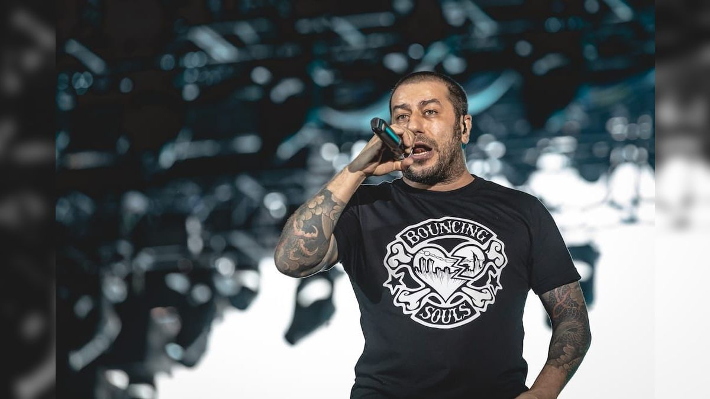
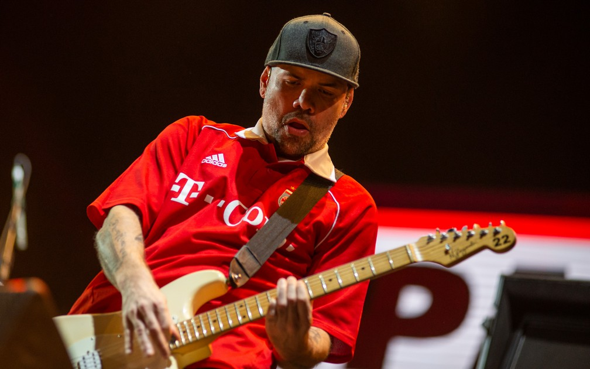
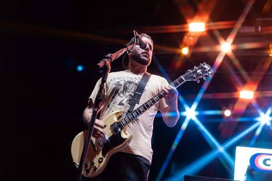
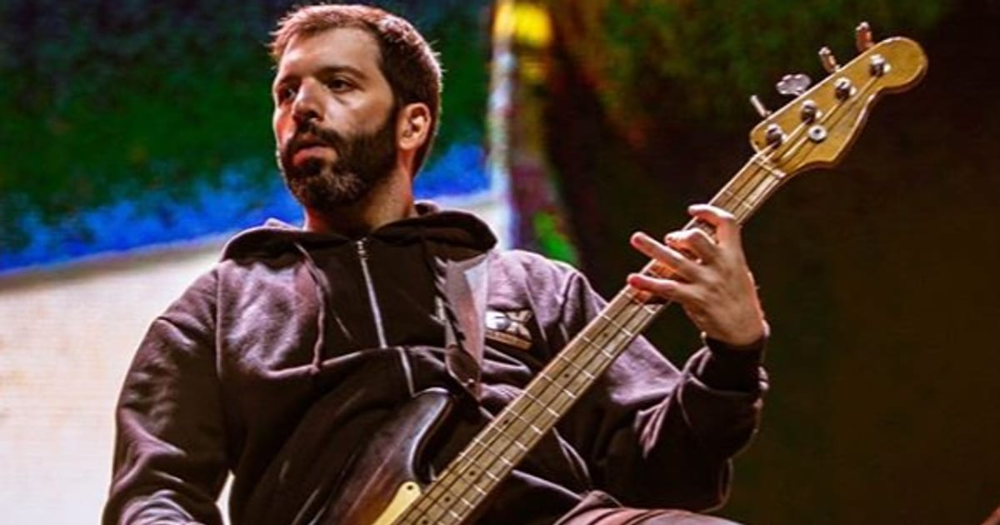
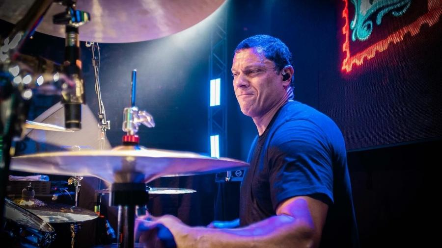

Fernando Badauí
Badauí, nome artístico de Fernando Estéfano Badauí, é o vocalista principal do CPM 22 e um dos fundadores da banda. Nascido em São Paulo, em 12 de março de 1976, é o único integrante da formação original que permanece no grupo. Além de interpretar as músicas, também participa do processo de composição e é uma das principais figuras responsáveis pela identidade e trajetória da banda.

Luciano Garcia
Luciano Garcia, também conhecido como Luscius, é guitarrista e vocalista de apoio do CPM 22. Nascido em 14 de outubro de 1978, entrou para a banda em 1999 e teve participação importante no desenvolvimento da sonoridade do grupo. Além de músico, também trabalha como compositor e produtor musical, tendo integrado brevemente a banda Blind Pigs antes de consolidar sua trajetória no CPM 22.

Phil Fargnoli
Philippe Fargnoli, conhecido como Phil, é guitarrista e vocalista de apoio do CPM 22. Nascido em Belo Horizonte, em 1º de janeiro de 1980, possui uma longa experiência na cena do rock independente brasileiro. Antes de integrar a banda, participou de grupos como Dead Fish, Reffer, Zander e Mr. Rude. Além da carreira musical, atua como produtor musical, compositor e engenheiro de áudio, sendo também um dos fundadores do selo independente Repetente Records.

Ali Zaher Jr.
Ali Zaher Jr. é o baixista e vocalista de apoio do CPM 22, tendo entrado oficialmente para a banda em agosto de 2020. Natural de Araraquara, no interior de São Paulo, possui experiência na música independente e já participou de diversos projetos musicais antes de integrar o grupo. Além de instrumentista, também é compositor, produtor musical e engenheiro de áudio, tendo estudado produção musical nos Estados Unidos. Também é proprietário do estúdio Sunrise Music.
